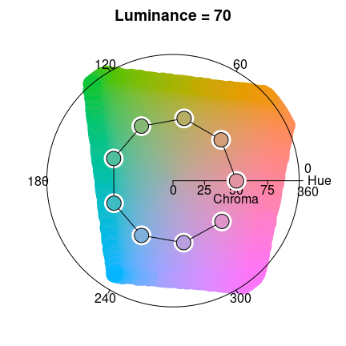
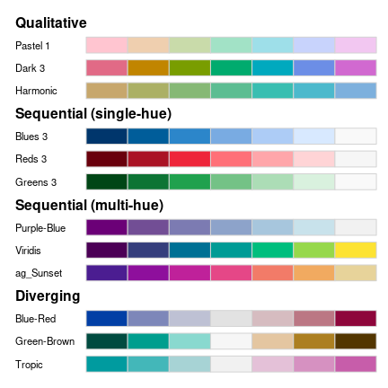
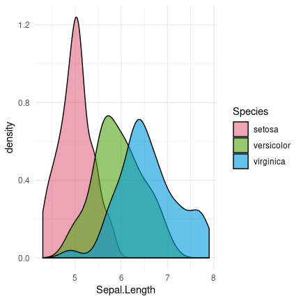
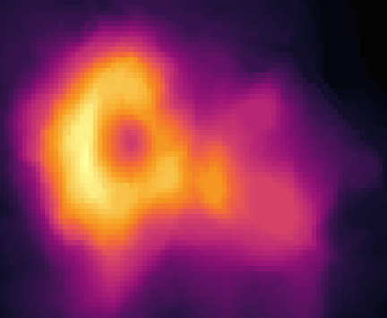
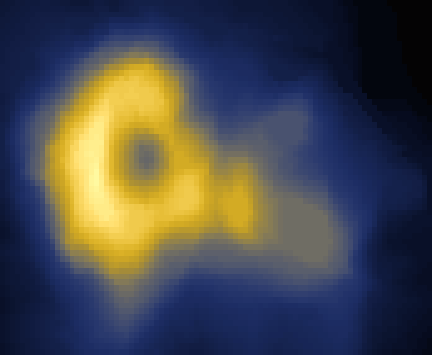
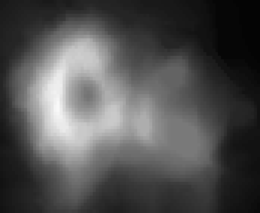

Toggle navigation
colorspace
1.4.0
Get started
Articles
Color Spaces: S4 Classes and Utilities
HCL-Based Color Palettes
HCL-Based Color Scales for ggplot2
Palette Visualization and Assessment
Apps for Choosing Colors and Palettes Interactively
Color Vision Deficiency Emulation
Color Manipulation and Utilities
Approximating Palettes from Other Packages
Reference
Changelog
Contact
A Toolbox for Manipulating and Assessing Colors and Palettes
Color spaces
HCL-based palettes
ggplot2 scales



Interactive color apps
Demos
Color vision deficiency
Utilities



Links
Download from CRAN at
https://cloud.r-project.org/package=colorspace
Report a bug at
http://colorspace.R-Forge.R-project.org/contact.html
Online color apps at
http://hclwizard.org/
License
BSD_3_clause
+ file
LICENSE
Citation
Citing colorspace
Developers
Ross Ihaka
Author
Paul Murrell
Author
Kurt Hornik
Author
Jason C. Fisher
Author
Reto Stauffer
Author
Claus O. Wilke
Author
Claire D. McWhite
Author
Achim Zeileis
Author, maintainer